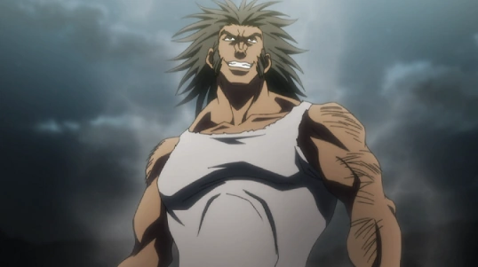

Classe Fortificação (Enhancement) – Nen
A Fortificação é uma das seis categorias principais do Nen no universo de Hunter x Hunter. Os usuários dessa classe são especialistas em potencializar as propriedades naturais do corpo ou objetos, tornando-os mais fortes, resistentes e duradouros.
Resumo rápido: Ideal para lutadores físicos que querem aumentar o poder dos ataques e a resistência do corpo.
Características principais
- Reforça atributos naturais (força, defesa, recuperação).
- Excelente para combates corpo a corpo.
- Usuários costumam ter controle refinado de Ten, Ren e Gyo.
- Técnicas são simples, mas extremamente poderosas.
Exemplo principal: Gon Freecss

Gon é um fortificador nato e usa sua aura para criar a técnica Jajanken, baseada no jogo “Pedra, Papel e Tesoura”:
- Pedra (Fortificação) – Soco potente com aura concentrada. Seu ataque mais destrutivo.
- Tesoura (Emissão) – Corta com aura em forma de lâmina.
- Papel (Transmissão) – Dispara uma esfera de aura à distância.
O foco do Gon é na “Pedra”, que aproveita 100% de sua classe natural.
Outro exemplo: Uvogin
Uvogin, da Trupe Fantasma, era um fortificador puro. Usava o Nen para tornar seu corpo quase invulnerável. Seu golpe “Big Bang Impact” era um soco com o impacto de uma bazuca.
Vantagens e Desvantagens
- ✔ Vantagens: Força bruta, resistência altíssima, fácil de usar.
- ✘ Desvantagens: Técnicas previsíveis, pouca variedade e menor alcance estratégico.
Fortificação - Gon & Uvogin